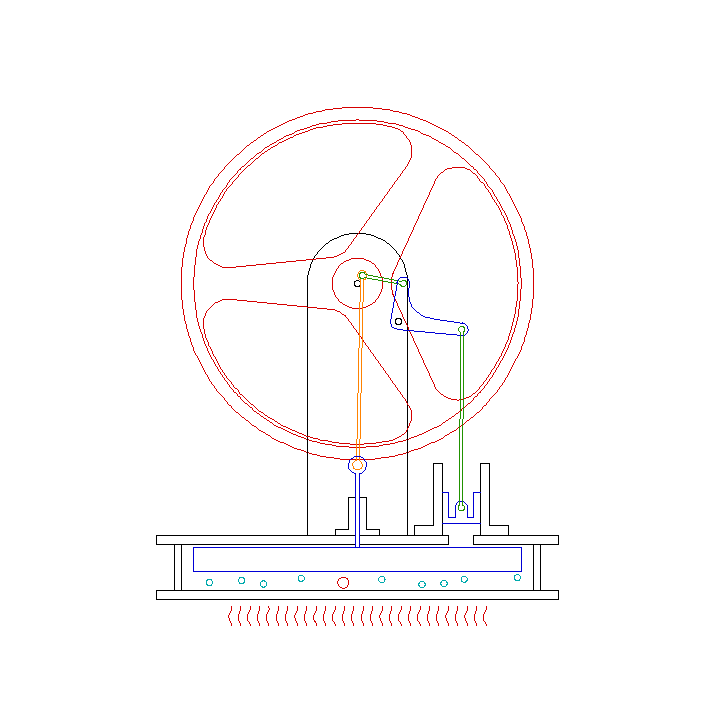
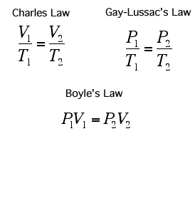
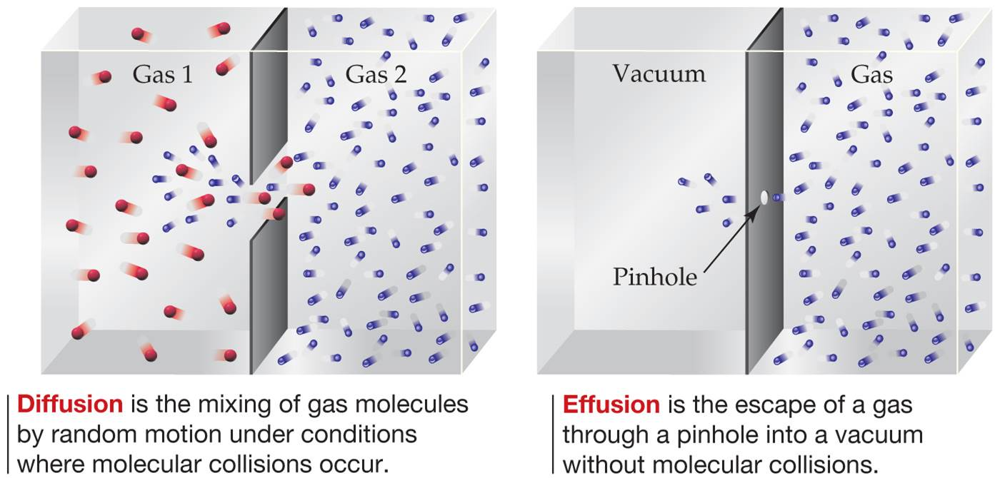
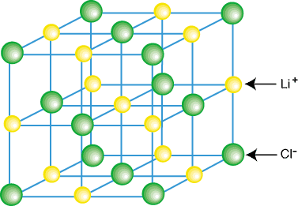
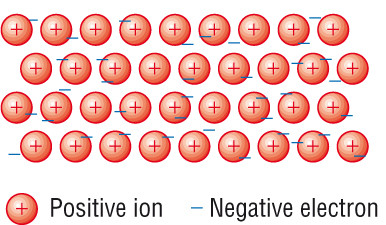

Chapter 10: Gases
-

- Vapor: Gaseous state of substances
- Gas Properties
- Volume of gas is equal to volume of container
- Two gases form a homogenous mixture regardless of identities
- Pressure: Force / Area
- SI Unit of Pressure: Pascal (Pa)
- 1 Pa: 1 N/m^2
- 1 Bar: 105 N/M^2
- Sea level: atmospheric pressure is 14.7 psi
- Standard atmospheric pressure: Pressure at sea level
- 1 torr = 1 mmHg, 1 atm = 760 mmHg/torr = 1.01325 x 10^5 Pa = 1.01325 Bar
- Barometer: glass tube closed on one side filled with mercury and inverted in a dish of mercury, used to measure pressure as pressure exerted on mercury within dish pushes mercury higher in the tube until pressure equilibrium
- Gas Laws 
- Boyle’s law: Volume and pressure are inversely proportional
- Charles's law: Volume and temperature are directly proportional
- Avogadro’s law: Volume and moles are directly proportional
- Avogadro’s hypothesis: Equal volumes of gases at the same temperature and pressure contain equal number of molecules
- Ideal Gas Equation: PV = nRT
- R = 8.314 J/mol-K
- Standard Temperature and Pressure (STP): 0 C and 1 atm
- Molar volume: Volume occupied by one mole of ideal gas
- Gas Density and Molar Mass
- D = (nM)/V = (PM)/(RT)
- Less dense gas will lie above denser gas in absence of mixing
- CO2 fire extinguishers use CO2 as it is more dense than air, preventing the air from reacting with the burning substance
- Gas Mixtures and Partial Pressure
- Dalton’s law of partial pressures: Total pressure of mixture of gases equals sum of partial pressures
- P1 / Pt = n1 / nt (partial pressure / total pressure = mole fraction of gas)
- Collecting gas over water: Total pressure = Partial pressure of gas + Partial pressure of water vapor
- Kinetic-Molecular Theory of Gases
- Gases consist of molecules that are in continuous random motion
- Combined volume of all molecules of gas is negligible
- Attractive and repulsive forces between gas molecules are negligible
- Average kinetic energy of molecules does not change over time, collisions are elastic and can transfer energy
- Average kinetic energy of molecules is proportional to absolute temperature. All molecules have same average kinetic energy
- Absolute temperature: measurement of average kinetic energy of molecules
- Pressure: how forcefully molecules strike the walls of container
- Molecular Speed
- Each individual molecule has a varied speed due to collisions and transfers of momentum
- Graphs of distribution of molecular speeds
- Fraction of molecules vs molecular speeds
- Ump : peak of the curve, most probable speed
- Urms (root-mean-square): speed of molecule possessing a kinetic energy equal to average kinetic energy of sample
- Uav: average speed, not equivalent to Urms but similar
- Average KE = ½(m)(urms)^2
- Application of Kinetic-Molecular Theory
- Increase in volume at constant pressure decreases pressure
- Molecules must move longer distance between collisions, allowing for less collisions, resulting in a decrease in pressure
- Temperature increase at constant volume causes pressure to increase
- Increase in temperature causes more forceful collisions
- Molecular Effusion and Diffusion
- Urms = 3RT/M
- Effusion: escape of gas molecules through a small hole
- Diffusion: spread of gas throughout space
- Graham's law of effusion: R1/R2=M2/M1
- Lighter gases have effuse faster
- Mean free path: average distance between collisions
- Less pressure and molecules increases mean free path
- Ideal Gas Behavior
- High pressure low temp, more deviation
- Low pressure high temp, less deviation
- Van der waals equation
- A = how strong molecules attract each other
- B = size of molecules
-

Chapter 11: Liquids and Intermolecular Forces
- Boiling point and melting point reflect strength of intermolecular forces
- Dipole-Dipole, Hydrogen Bonding are van der Waals forces
- Intermolecular forces are weaker than ionic since charges are less and distance between molecules is greater than distance between atoms
- Dispersion Forces: Momentary dipole moments
- Depends on Polarizability: ease in which charge distribution can be distorted
- Polarizability increases as number of electrons increase
- Trends similar to atomic weight trends
- Shape that allow more contact between molecules have stronger dispersion forces
- Dipole-Dipole: Polar molecules orient in positive negative formation
- For molecules of the same mass and size, strength of dipole-dipole forces increases with increasing polarity
- Hydrogen Bonding: H-F, H-O, H-N
- Hydrogen has no inner electrons so it is highly positive and can attach with electronegative atoms
- Weaker than covalent bonds
- Helps stabilize structure of proteins and are responsible for the way DNA can carry genetic information
- Solid ice is less dense than water since the hydrogen bonding orients water to have holes, while water is more random and is more dense
- Ion-Dipole Forces
- Cations are attracted to negative end of dipole
- Anions are attracted to positive end of dipole
- Strongest intermolecular force
- Viscosity: resistance to flow
- Viscosity increases with molecular weight
- Viscosity decreases with increased temperature
- Molecules with stronger intermolecular forces has higher viscosity
- Surface Tension: energy required to increase the surface area of a liquid by a unit amount
- Cohesive forces: Intermolecular forces that bind similar molecules together
- Adhesive forces: Intermolecular forces that bind a substance to a surface
- Meniscus is due to the liquid binding with the glass
- Mercury cannot bind with glass creating a backwards U
- Capillary Action: Rise of liquids up narrow tubes
- Allows for an increase in surface area of liquid
- Phase Changes: changes of state of matter
- Heat of Fusion: energy required to go from solid to liquid
- Heat of Vaporization: energy required to go from liquid to gas
- Heat of Sublimation: energy required to go from solid to gas
- Sum of heat of vaporization and heat of fusion
- Heating Curves: Graph of temperature vs heat added
- Temperature doesn’t change when a phase change occurs as the energy added is used to overcome attractive forces between molecules
- Supercooling: When heat is removed so rapidly that the molecules don't have time to assume a solid form, results in a liquid form that is unstable
- Critical Temperature and Pressure
- Critical Temperature: Highest temperature at which a liquid phase can form, at which a liquid can exist
- Critical Pressure: Pressure needed to bring about liquefaction at critical temperature
- Supercritical Fluid: Temperature and pressure exceed critical temperature and critical pressure, Liquid and Gas Phases are indistinguishable
- Vapor Pressure: Pressure exerted by its vapor when liquid and vapor are in dynamic equilibrium
- Dynamic equilibrium: Evaporation and condensation rates are equivalent
- Volatile: Liquids evaporate readily
- Liquids boil when its vapor pressure equals the external pressure acting on the liquid surface. At this point, bubbles of vapor form within the liquid
- Boiling point increases with increasing external pressure
- Normal Boiling Point: Boiling point at 1 atm
- Phase Diagram: Graphic way to summarize conditions under which equilibria exists in different states of matter
- Red Curve: Vapor-pressure curve of the liquid, represents equilibrium between liquid and gas phases
- Critical Point: Point that ends the red curve, corresponding to the critical temperature and pressure of the substance
- Green Curve: Sublimation curve, separates solid phase from gas phase
- Blue Curve: Melting curve, separates solid phase from liquid phase
- Triple Point: All phases are in equilibrium
- Liquid Crystal: A viscous milky state between the solid and liquid phase when heated
- Often composed of rod-shaped molecules that are rigid in the middle, oriented randomly
- Nematic Liquid Crystal: Molecules align so long axes point in same direction but ends don’t align
- Smectic A Liquid Crystal: Molecules packed in layers that maintain long axis alignment perpendicular to layer planes
- Smectic C Liquid Crystal: Molecules packed in layers that maintain long axis alignment inclined with respect to layer planes
- Cholesteric Liquid Crystal: Molecules arrange in layers with long axes parallel to other molecules in same layer, Molecules in different layers have rotated orientation
- Arrangement produces distinct colors
Chapter 12: Solid and Modern Materials
- Classification of Solids
- Metallic solids: Held together by delocalized sea of valence electrons
- Ionic solids: Held together by cation and anion attraction
- Covalent-Network Solids: Held together by an extended network of covalent bonds
- Molecular solids: Held together by intermolecular forces, usually
- Polymers: Long chains of atoms held together by covalent bonds
- Nanomaterials: Solids in which the dimensions of individual crystals have been reduced to the order of 1–100 nm
- Structure of Solids
- Crystalline Solids: Atoms are arranged in an orderly repeating pattern, solid has regular shapes
- Amorphous Solids: Solids that lack the order found in crystalline solids, doesn’t have well defined shapes
- Unit Cells and Crystal Lattice 
- Unit Cell: Small repeating unit in a crystalline solid
- Crystal lattice: Geometrical pattern of points in which unit cells are arranged
- Lattice Points: Points of lattice
- Lattice Vectors: Defines the position of the lattice point
- Oblique Lattice: Lattice vectors are different lengths and form an arbitrary parallelogram, angle between is rand
- om
- Square Lattice: Lattice vectors are equal in length and perpendicular to one another, angle between is 90
- Hexagonal Lattice: Lattice vectors same length with angle between being 120
- Rectangular Lattice: Lattice vectors different length, angle is 90
- Primitive Cubic Lattice: Lattice points only at corners of unit cell
- Body-Centered Cubic Lattice: Lattice points at corners and middle
- Face-Centered Cubic Lattice: Lattice points at corner and middle of every face
- Motif: Group of atoms associated with each lattice point
- Metallic Solids
- Electrons are delocalized in a sea of electrons
- High malleability, conductivity, malleable, ductile
- Close Packing
- Hexagonal Packing: Third layer lies in depressions over spheres of first layer
- Cubic Close Packing: Third layer lies in depressions of second layer
- Coordination Number: Number of atoms surrounding a given atom in crystalline structure
- Alloy: Material containing more than one element with properties similar to a metal
- Substitutional Alloy: Atoms of solute in solid solution occupy positions occupied by solvent atom
- Forms when two atoms have similar characteristics
- Interstitial Alloy: Solute atoms occupy the holes between solvent atoms
- Forms when two atoms have differing atomic radii
- Heterogeneous Alloy: Components not dispersed uniformly
- Intermetallic Compounds: Compounds with randomly distributed atoms
- Metallic Bonding 
- Sea of electrons: Sea of valence electrons surrounded by cations
- Ionic Bonding
- Cations and anions attracted to each other
- Molecular Solids
- Atoms held together by intermolecular forces
- Low melting point, soft
- Covalent Network Solids
- Held together by large networks of covalent bonds
- Semiconductors
- Elemental Semiconductor: Contains one atom
- Compound Semiconductor: Contains multiple atoms
- Semiconductor Doping: Adding controlled amounts of impurities to the semiconductors
- Polymeric Solids
- Plastics: Can be formed into many shapes
- Thermoplastic: Can be reshaped
- Thermosetting Plastic: Cannot be reshaped
- Elastomer: When stretched, it returns to its original shape
- Making Polymers
- Addition Polymerization: Monomers are coupled through their multiple bonds
- Condensation Polymerization: Two smaller molecules form a larger molecule and release H2O
- Cross Linking: Forming chemical bonds between chains
- Crystallinity: Extent of chain ordering
AP Chem
AP Chemistry study guide created by Jeffrey Chou.
Based off of Mr. Leung's curriculum and the Baron's AP Chemistry resource.